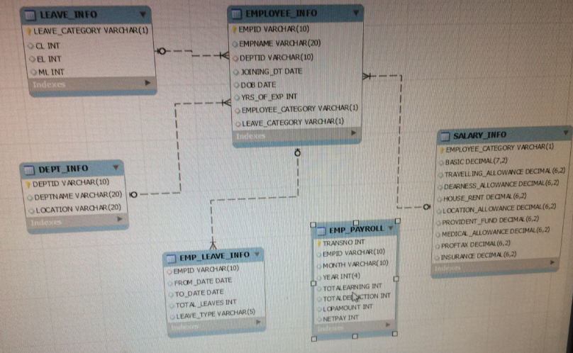

PayRoll Mangement System
select e.empid,e.empname,d.depid,d.depname
from employee_info e
join dep_info d
on e.depid=d.depid
where d.location='Chennai';
DDL COMMANDS
-LEAVE_INFO
CREATE TABLE LEAVE_INFO (LEAVE_CATEGORY VARCHAR
(1) PRIMARY KEY ,
CL INTEGER, EL INTEGER, ML INTEGER
);
--SALARY_INFO
CREATE TABLE SALARY_INFO(EMPLOYEE_CATEGORY VARCHAR(1) PRIMARY KEY,
BASIC DECIMAL(7,2),TRAVELLING_ALLOWANCE DECIMAL(6,2),
DEARNESS_ALLOWANCE DECIMAL(6,2),
HOUSE_RENT DECIMAL(6,2),
LOCATION_ALLOWANCE DECIMAL(6,2),
PROVIDENT_FUND DECIMAL(6,2),
MEDICAL_ALLOWANCE DECIMAL(6,2),
PROFTAX DECIMAL(6,2),INSURANCE DECIMAL(6,2)
);
--DEPARTMENT
CREATE TABLE DEPT_INFO (DEPTID VARCHAR (10) PRIMARY KEY,
DEPTNAME VARCHAR (20), LOCATION VARCHAR (20));
--EMPLOYEE_INFO
CREATE TABLE EMPLOYEE_INFO (EMPID VARCHAR(10) PRIMARY KEY,
EMPNAME VARCHAR(20), DEPTID VARCHAR(10),
JOINING_DT DATE, DOB DATE,
YRS_OF_EXP INTEGER,
EMPLOYEE_CATEGORY VARCHAR(1),
LEAVE_CATEGORY VARCHAR(1),
FOREIGN KEY(DEPTID) REFERENCES DEPT_INFO(DEPTID),
FOREIGN KEY(EMPLOYEE_CATEGORY) REFERENCES SALARY_INFO(EMPLOYEE_CATEGORY),
FOREIGN KEY(LEAVE_CATEGORY) REFERENCES LEAVE_INFO(LEAVE_CATEGORY));
--EMP_LEAVE_INFO
CREATE TABLE EMP_LEAVE_INFO (EMPID VARCHAR (10),
FROM_DATE DATE, TO_DATE DATE, TOTAL_LEAVES INTEGER,
LEAVE_TYPE VARCHAR (5),
CONSTRAINT LEAVE_INFO FOREIGN KEY (EMPID)
REFERENCES EMPLOYEE_INFO
(EMPID));
--EMP_PAYROLL
CREATE TABLE EMP_PAYROLL (TRANSNO INTEGER PRIMARY KEY,
EMPID VARCHAR (10), MONTH VARCHAR (10),
YEAR INTEGER (4), TOTALEARNING INTEGER,
TOTALDEDUCTION INTEGER, LOPAMOUNT INTEGER,
NETPAY INTEGER );
DML COMMAND
-- DATA FOR SALARY_INFO TABLE
INSERT INTO SALARY_INFO VALUES ('A',6000,1400,1200,1750,900,750,1450,260,1000);
INSERT INTO SALARY_INFO VALUES ('B',5500,1100,900,1450,700,650,1250,230,900);
INSERT INTO SALARY_INFO VALUES ('C',5000,1000,800,1350,650,500,1050,190,700);
INSERT INTO SALARY_INFO VALUES ('D',4000,900,750,1150,450,400,750,120,600);
--DATA FROM LEAVE_INFO TABLE
INSERT INTO LEAVE_INFO VALUES ('X',18,5,10);
INSERT INTO LEAVE_INFO VALUES ('Y',15,3,8);
INSERT INTO LEAVE_INFO VALUES ('Z',12,3,7);
--DATA FOR DEPT TABLE
INSERT INTO DEPT_INFO VALUES ('D001','IT','BANGALORE');
INSERT INTO DEPT_INFO VALUES ('D002','SALES','CHENNAI');
INSERT INTO DEPT_INFO VALUES ('D003','HR','COCHIN');
INSERT INTO DEPT_INFO VALUES ('D004','TRANSPORT','DELHI');
--DATA FOR EMPLOYEE_INFO TABLE
INSERT INTO EMPLOYEE_INFO VALUES ('E001','RAM','D001','2001-03-01','79-07-12',11,'A','X');
INSERT INTO EMPLOYEE_INFO VALUES ('E002','DEV','D001','2011-05-23','87-03-11',1,'D','Z');
INSERT INTO EMPLOYEE_INFO VALUES ('E003','SAM','D001','2011-04-13','84-11-14',1,'D','Z');
INSERT INTO EMPLOYEE_INFO VALUES ('E004','STEVE',NULL,NULL,'83-01-25',NULL,NULL,NULL);
INSERT INTO EMPLOYEE_INFO VALUES ('E005','OLGA','D002','2007-10-02','79-05-12',5,'B','Y');
INSERT INTO EMPLOYEE_INFO VALUES ('E006','SANGEETHA','D003','2005-07-10','82-09-12',7,'B','Y');
INSERT INTO EMPLOYEE_INFO VALUES ('E007','PRAKASH','D003','2009-06-15','87-08-12',3,'D','Z');
INSERT INTO EMPLOYEE_INFO VALUES ('E008','SANA',NULL,NULL,NULL,NULL,NULL,NULL);
INSERT INTO EMPLOYEE_INFO VALUES ('E009','MANO','D002','2008-11-01','88-05-12',4,'C','Y');
INSERT INTO EMPLOYEE_INFO VALUES ('E010','DINU','D001','2006-03-08','82-03-23',6,'B','Y');
--DATA FOR EMP_LEAVE_INFO
INSERT INTO EMP_LEAVE_INFO VALUES ('E001','2012-04-04','2012-04-12',6,'CL');
INSERT INTO EMP_LEAVE_INFO VALUES ('E002','2012-03-02','2012-05-02',1,'CL');
INSERT INTO EMP_LEAVE_INFO VALUES ('E003','2012-04-04','2012-05-05',31,'ML');
INSERT INTO EMP_LEAVE_INFO VALUES ('E004','2012-02-14','2012-05-10',1,'OH');
INSERT INTO EMP_LEAVE_INFO VALUES ('E005','2012-01-14','2012-01-06',3,'EL');
INSERT INTO EMP_LEAVE_INFO VALUES ('E001','2012-04-14','2012-04-16',2,'CL');
--DATA FOR EMP_PAYROLL
INSERT INTO EMP_PAYROLL VALUES (1,'E001','APR',2012,12700,2010,0,10690);
INSERT INTO EMP_PAYROLL VALUES (2,'E002','MAR',2012,8000,1120,0,6880);
INSERT INTO EMP_PAYROLL VALUES (3,'E003','APR',2012,8000,1120,3360,4640);
INSERT INTO EMP_PAYROLL VALUES (4,'E005','JAN',2012,10700,1780,0,8920);
INSERT INTO EMP_PAYROLL VALUES (5,'E006','JAN',2012,10700,1780,500,8420);
QUESTIONS AND ANSWER
#Simple Questions:
#Problem # 1: Write a query to display Employee ID, Employee Name, Department ID and
#Department Name of all employees who has a department assigned.
select e.empid,e.empname,d.deptid,d.deptname
from employee_info e join dept_info d where e.deptid is not null;
#Problem # 2: Write a query to display the Employee ID, Employee Name,
#Basic Pay of all employees who are in employee category 'A'
select e.empid,e.empname,s.basic
from employee_info e join salary_info s on e.employee_category=s.employee_category
where s.employee_category='A';
#Problem # 3: Write a query to display the Employee ID, Employee Name, Department ID and
#Department Name of all employees who has a department assigned and department location is ‘CHENNAI’.
select e.empid,e.empname,d.deptid,d.deptname
from employee_info e join dept_info d on e.deptid=d.deptid
where e.deptid is not null and d.location like 'Bangalore';
#Problem # 4: Write a query to display the employee ID and
#employee name of the employees who have not been assigned a department yet.
select empid,empname from employee_info
where deptid is null;
#Problem # 5: Write a query to display the employee ID, employee name and
#joining date of the employees who joined before 2005.
select empid,empname,joining_dt
from employee_info where extract(year from joining_dt)<2005;
#Problem # 6: write a query to display employee name and date of joining for all employees.
#(Date should be displayed in the format “23/JANUARY/2012�� with Alias “ JOINING_DATE�� in select statement)
select empname,date_format(joining_dt,'%e/%M/%Y ') JOINING_DATE;
#Problem # 7: Write a query to display the employee ID, employee name and
#joining date of the employees who joined between Jan 1 2005 and Dec 31’st 2010
select empid,empname,joining_dt
from employee_info
where joining_dt between '2005-01-01' and '2012-12-31';
#Problem # 8: Write a query to display the employee ID, employee name and
#joining date of the employees who joined in MARCH.
select empid,empname,joining_dt
from employee_info where joining_dt like '____-03-__';
#Problem # 9: Write a query to display all employee names which begins with 'R'.
select empname from employee_info where empname like 'R%';
#Problem # 10: Write a query to display the first five employees name in the employee table and
#the respective row number (use ROWNUM for identifying the first five records)
SET @rank=0;
select empname ,@rank:=@rank+1 AS rowno from employee_info order by rowno limit 5;
#Average Questions:
#Problem # 1: Write a query to display the EmployeeID, Employee Name,
#Net Pay of an employee whose ID is "E001" for the month of APRIL
select i.empid,i.empname,p.netpay
from employee_info i join emp_payroll p on i.empid=p.empid
where p.empid='E001' and month like 'APR';
#Problem # 2: Write a query to display the department id and no of employees in each
#department sorted by department id.(Exclude department with null values).
select ei.deptid,count(ei.deptid) NO_Of_EMPLOYEE
from dept_info di join employee_info ei on di.deptid=ei.deptid
where ei.deptid is not null group by ei.deptid order by di.deptid asc;
#Problem # 3: Write a query to display the EmployeeID, Employee Name and
#the total number of leaves each employee has taken with “Total_Leaves�� as alias.
select ei.empid,ei.empname,sum(Total_leaves) Total_Leaves
from employee_info ei join emp_leave_info eli on ei.empid=eli.empid
group by empid;
#Problem # 4: Write a query to display the EmployeeID, Employee Name, DOB
#and Age in Years without decimals with alias name "Age".
#Hint: Formula for age calculation is Age = current date- dob/12, round this to the nearest whole number.
select empid,empname,dob,round(datediff(current_date,dob)/365) AGE
from employee_info;
#Problem # 5: Write a query to display employee id, employee name of all employees
#who doesn't have LOP amount for the month of APR and year 2012.
select ei.empid,ei.empname
from emp_payroll ep join employee_info ei on ep.empid=ei.empid
where lopamount=0 and ep.month=�APR� and ep.year=2012
order by ei.empid;
#Problem # 6: Write a query to display employee name, professional tax, netpay of employees with employee category 'A'
select empname,proftax,netpay
from salary_info si join employee_info ei on
si.employee_category=ei.employee_category join emp_payroll ep on ei.empid=ep.empid
where si.employee_category='A';
#Problem # 7: Write a query to display employee id, employee name,
#department id who are having netpay in the range 10000 - 20000
select ei.empid,ei.empname,ei.deptid
from employee_info ei join emp_payroll ep on ei.empid=ep.empid
where netpay between 10000 and 20000;
#Problem # 8: Write a query to display employee names whose
#total deduction is more than 2000 for the month of APRIL.
select ei.empname
from emp_payroll ep join employee_info ei on ep.empid=ei.empid
where totaldeduction>2000 and month like 'APR';
#Problem # 9: Write a query to display employee id, employee name, department id,
#department name of all employees regardless of whether an employee is assigned a department or not.
select ei.empid,ei.empname,ei.deptid,di.deptname,
case
when ei.deptid is not null then 'YES'
else 'NO'
end ASSIGNED_OR_NOT
from employee_info ei join dept_info di;
#Problem # 10: Write a query to display Employee ID, Employee Name, Department ID,
#Years of Experience and Employee Category of the employees who have availed leaves more than 10 days.
#Hint: Use the total_leaves column to check the leave condition for more than ten days.
select ei.empid,ei.deptid,ei.yrs_of_exp,ei.employee_category
from employee_info ei join emp_leave_info eli on ei.empid=eli.empid
group by eli.empid having sum(total_leaves)>10;
#Complex Questions:
#Problem # 1: Write a query to display employee id, employee name and remaining casual
#leaves (alias- RemainingLeaves) for the employee with employee id "E002".
#Based on the total causal leaves available, subtract the number of causal leaves he has
#availed to get the remaining leaves.
#Hint: CL – Causal leave.
#EMPLOYEE_INFO table has Employee’s leave Category. For example employee “E001�� belong to
#“X�� leave category.
#EMP_LEAVE_INFO table has details of number of leaves the employees has availed.
#For example, “E001�� has availed totally 8 days of causal leave.
#LEAVE_INFO table has the Leave Category and number of CL, EL and ML available for the
#category. For example, “E001�� has category X which has 18 days of total causal leave
#that he can avail.
#So, E001’s remaining leave would be 10 days. Similarly calculate for E002.
select e.empid,e.empname,(l.cl-sum(el.total_leaves)) as remainingleaves from emp_leave_info el join employee_info e
on el.empid=e.empid
join leave_info l on e.leave_category=l.leave_category where e.empid='E002'
and el.leave_type='cl' group by e.empid;
#Problem # 2: Write a query to display employee id, employee name and total number of
#leaves he can take (hint: with “EligibleLeave�� as alias). This should be retrieved for
#all the employees. Sum all the EL, ML and EL leaves for the each employee’s category to
#get the total leaves.
#Hint:
#EMPLOYEE_INFO table has Employee’s leave Category. For example employee “E001�� belong to
#“X�� leave category.
#LEAVE_INFO table has the Leave Category and number of CL, EL and ML available for them.
#For example, Employee E001 belongs to X category and he has 18 days of CL and 5 days of
#EL and 10 days of ML that he can avail.
#So, E001’s eligible leave would be 33 days which is sum of all his leaves.
#Similarly calculate for all employees.
select e.empid,e.empname,(l.cl+l.el+l.ml) as eligibleleave from employee_info e join leave_info l
on l.leave_category=e.leave_category;
#Problem # 3: Write a Query to display employee id, employee name, department id,
#department name, net pay of all employees who have drawn the highest salary (net pay)
#in the month of APRIL 2012.
#Hint: For example if there are 10 employees where 3 employees have got a salary of
#1000 which is the highest salary of the employee in the month of April all the three
#records needs to be displayed.
select e.empid,e.empname,e.deptid,d.deptname,p.netpay from employee_info e join
emp_payroll p on e.empid=p.empid join dept_info d on e.deptid=d.deptid where
p.month='apr' and e.empid in
(select empid from emp_payroll where netpay>=
(select max(netpay) from emp_payroll));
#Problem # 4: Write a query to display employee id, employee name, basic pay and tax
#percentage for all employees. Use “TaxPercentage�� as alias. Display the Tax percentage
#for all employees based on the following criteria: (If Basic Pay <= 4000 then tax
#percentage should be 10%, basic <= 5000 then 20%, basic<=6000 then 30% basic > 6000
#then 40%).
select e.empid,e.empname,s.basic ,
if(s.basic<=4000, 0.1*s.basic,(if(s.basic<=5000,0.2*s.basic,(if(s.basic<=6000,0.3*s.basic,0.4*s.basic)))))
as taxpercentage from employee_info e join salary_info s on e.employee_category=s.employee_category order by e.empid;
#Problem # 5: Write a query to display employee name,employee category and basic pay
#for all employees based on the following criteria: (Emp_cat
#'A' - Basic Pay should be 6000, 'B'-4000, 'C'- 3000, 'D'-2000)
#Hint: Use “salary�� as alias for the basic pay field.
#For example, if there are 3 employees with one having category ‘A’ and other having
#category ‘D’ and other category ‘C’. Then the query should display the three employees
#name, category and the salary will be 6000, 2000 and 1000 for the three employees.
select e.empname,e.employee_category,s.basic,
if(e.employee_Category='A',6000,
(if(e.employee_category='B',4000,
(if(e.employee_category='C',3000,2000))))) as salary from employee_info e join salary_info s
on e.employee_category=s.employee_category order by e.empid;
select e.empname,e.employee_category,s.basic,
case e.employee_category
when 'A' then 6000
when 'B' then 4000
when 'C' then 3000
else 2000
end
as salary from employee_info e join salary_info s
on e.employee_category=s.employee_category order by e.empid;
show tables;
select * from dept_info;
select * from emp_leave_info;
select * from emp_payroll;
select * from employee_info;
select * from leave_info;
select * from salary_info;